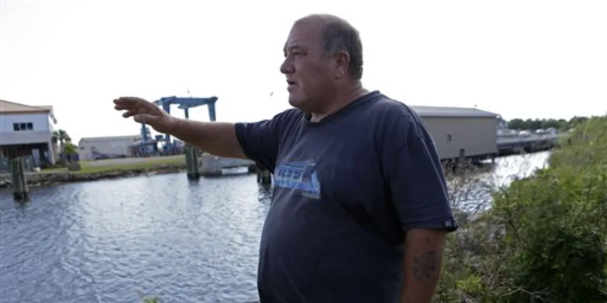

Here at "The Local Planetary News" we are proud to present you with today's latest news updates that you all crave. On today's special update, you will never be able to guess what we are going to be talking about: elderly adult males being kidnapped and turned into anti-aging skin cream made from the products of harvesting the elderly. We even found ourselves a survivor of such an abduction, and we were able to get him to give us a statement. The statement is as follows:
"This was about 15 years ago, I was drunk leaving the bar late at night and I looked up toward the sky just to get my bearings. I noticed there was a really bright light getting closer and closer. I sat there thinking one of the angels was trying to kidnap me and take me to heaven again or maybe it was a pickup truck. Then all of a sudden, I'm buck-naked and strapped down to a silver table while they were cutting off my parts and putting it into a machine for cream to make them look younger."